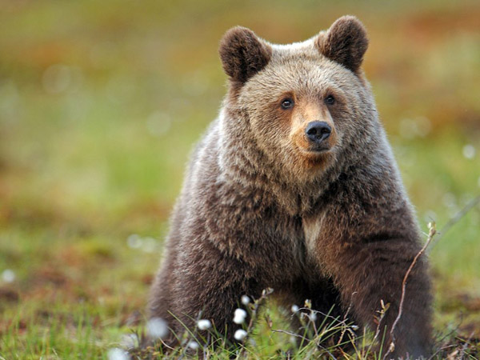
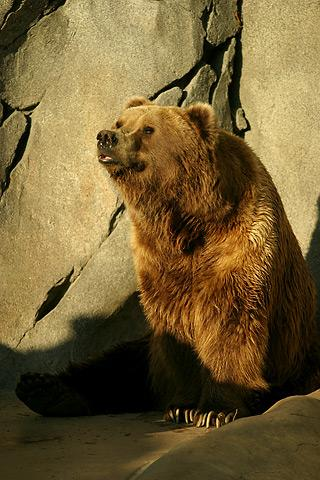

на головну
Ведмідь

Бурий ведмідь
Бурий ведмідь
Біологічна класифікація
Домен: Ядерні (Eukaryota)
Царство: Тварини (Animalia)
Тип: Хордові (Chordata)
Клас: Ссавці (Mammalia)
Ряд: Хижі (Carnivora)
Родина: Ведмедеві (Ursidae)
Рід: Ведмідь (Ursus)
Види
Ведмідь бурий — Ursus arctos
Ведмідь барибал — Ursus americanus
Ведмідь білий — Ursus maritimus
Ведмідь гімалайський — Ursus thibetanus
Посилання
Commons-logo.svg Вікісховище: Ursus (genus)
Wikispecies-logo.svg Віківиди: Ursus
ITIS logo.svg ITIS: 180541
US-NLM-NCBI-Logo.svg NCBI: 9639
Fossilworks: 41331
Ведмі́дь (Ursus) — центральний рід в родині Ведмедеві (Ursidae).
Рід об'єднує найбільш типових та знаних представників родини, і на його основі сформовані загальні систематичні критерії віднесення тварин до неї.
Відповідно до палеонтологічних відомостей, рід Ведмідь з'явився 5-6 мільйонів років тому. Першим його представником на теперішній час вважають ведмедя малого, Ursus minimus — відносно невелику тварину, чиї викопні рештки знайдені на території Франції.
Всі сучасні чотири види роду, а також ряд вимерлих (таких, наприклад, як печерний ведмідь (Ursus spelaeus)) походять від етруського ведмедя (Ursus etruscus), що жив 2-1 мільйони років тому.
Наймолодшим видом роду є ведмідь білий (Ursus maritimus), який відокремився від бурого ведмедя приблизно 200 тисяч років тому.
Зміст
1 Етимологія
2 Класифікація
3 Харчування
4 Примітки
5 Джерела
Етимологія[ред. | ред. код]
Українська назва цієї тварини співзвучна її назвам в інших слов'янських мовах: рос. медведь, болг. медве́д, серб. мѐдвjед/medvjed, словен. médvẹd, чеськ. medvěd, nedvěd, пол. niedźwiedź, діал. miedźwiedź, в.-луж. mjedwjédź, н.-луж. mjadwjeź. Праслов'янське *medvědь утворене зі слів *medъ («мед») та *ěd- («поїдач», «їд») і являє собою заміну питомо слов'янської назви, яка була похідною від праіндоєвропейського *h₂ŕ̥tḱos[1][2], пов'язаною з давньою заброною (табу) на вимову його уголос. Українське «ведмідь» утворилося від *medvědь у результаті метатези (у діалектах засвідчена також форма «медвідь»)[3][1].

Ранньопраслов'янська незбережена назва походить від праіндоєвропейської назви ведмедя *h₂ŕ̥tḱos, яка буквально значить «руїнівник». Похідні від неї збереглися у багатьох індоєвропейських мовах: алб. ari («ведмідь») і arushë («ведмедиця»), хет. ḫartaggas («танцівник у шкурі ведмедя»), вірм. արջ, «арж» («ведмідь»), лит. irštva («барліг»), грец. άρκτος та αρκούδα («ведмідь», звідси й «Арктика»), санскритське ऋक्ष, ṛkṣá (ведмідь), циг. rish, перс. خرس «хірс», тадж. хирс, осет. арс, авест. arša-, согд. ašša, лат. ursus («ведмідь») та ursa («ведмедиця») — від давніших форм *orssos *orksos. У деяких індоєвропейських мовах питома назва ведмедя була, аналогічно ранньопраслов'янській назві, табуйована: лит. lokys походить від klakis і буквально значить «тупотун»; нім. Bär та англ. bear буквально значать «бурий»[4], дав.-інд. madhuvád також значить «медоїд», «поїдач солодкого», а лит. mėsė̃dis — «м'ясоїд».
Незважаючи на те, що слово «ведмідь» саме є за походженням евфемізмом, воно надалі теж піддалося певній табуїзації: цю тварину уникали звати «ведмедем», заміняючи це слово різними іносказаннями. Українці уживали слова «вуйко»[5], «великий»[6][7] (Карпати), «бурмило»[8], «Михайло». Деякі припускають, що поширене найменування ведмедя — «Мишко», «Міша» утворилося від слова «мѣхъ» і пов'язане з тим, що його масивне тіло нагадує формою мішок[9].
Класифікація[ред. | ред. код]
Рід включає кілька видів, а саме:
вимерлі:
ведмідь печерний — Ursus spelaeus (вимерлий)
ведмідь малий — Ursus minimus (вимерлий)
ведмідь етруський — Ursus etruscus (вимерлий)
Ursus deningeri
сучасні:
ведмідь гімалайський — Ursus thibetanus
ведмідь барибал — Ursus americanus
ведмідь бурий — Ursus arctos
ведмідь білий — Ursus maritimus
"За останнім зведенням «Види ссавців світу» (2005), в межах цього роду розрізняють такі 4 сучасні види і підвиди роду Ursus:
рід Ведмідь — Ursus
вид Ведмідь барибал — Ursus americanus (підвиди americanus, altifrontalis, amblyceps, californiensis, carlottae, cinnamomum, emmonsii, eremicus, floridanus, hamiltoni, kermodei, luteolus, machetes, perniger, pugnax, vancouveri)
вид Ведмідь бурий — Ursus arctos (підвиди arctos, alascensis, beringianus, californicus, collaris, crowtheri, dalli, gyas, horribilis, isabellinus, lasiotus, middendorffi, pruinosus, sitkensis, stikeenensis, syriacus)
вид Ведмідь білий — Ursus maritimus
вид Ведмідь гімалайський — Ursus thibetanus (підвиди thibetanus, formosanus, gedrosianus, japonicus, laniger, mupinensis, ussuricus)
Хутро та шкіра усіх видів віддавна вважається знаним трофеєм та використовується при пошитті одягу чи як прикраса у цільному вигляді, зокрема у Коменешті є традиційним одягом під час параду[10].
Харчування[ред. | ред. код]
Cклад їжі ведмедя залежить від сезону і урожаю тих чи інших кормів.
Одразу після сплячки тварини харчуються мурахами, пагонами осики, бігають за лосями, але в основному
живуть за рахунок жиру, який залишився після зимової сплячки. Коли сходить сніг, ведмеді їдять ягоди, які перезимували, молоду траву, трохи пізніше — молоді листя осики, різні трави, а також дрібних тварин і пташині яйця. В середині літа харчуються різноманітними ягодами в міру їх дозрівання. Суттєвим кормом слугують ліщина, жолуді, каштани, плоди диких фруктових дерев (на Камчатці ведмеді їдять лососеву рибу, яка йде на нерест, в тайзі полюбляють кедрові горіхи).
на початок